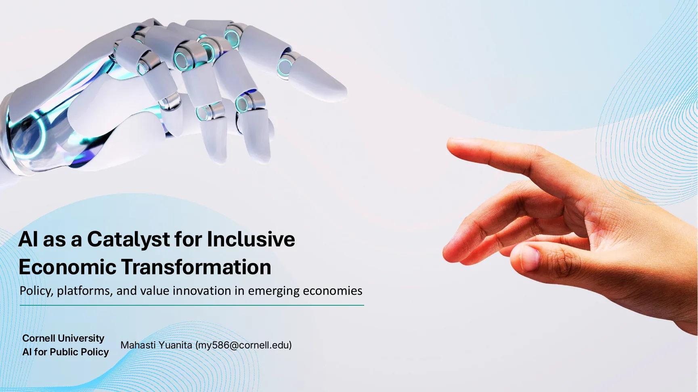
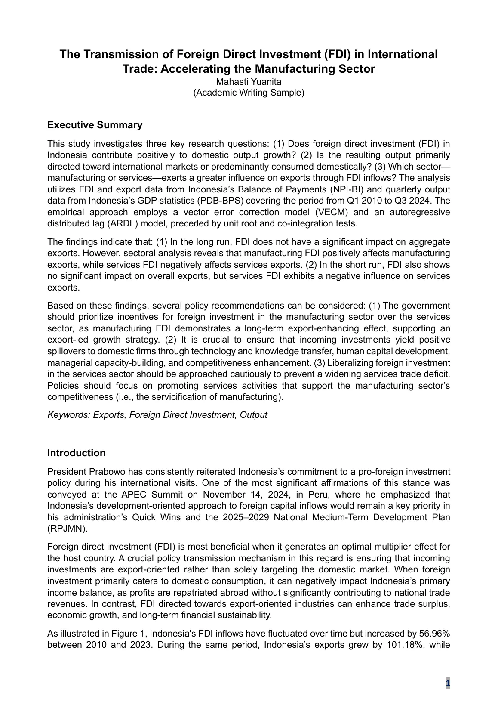
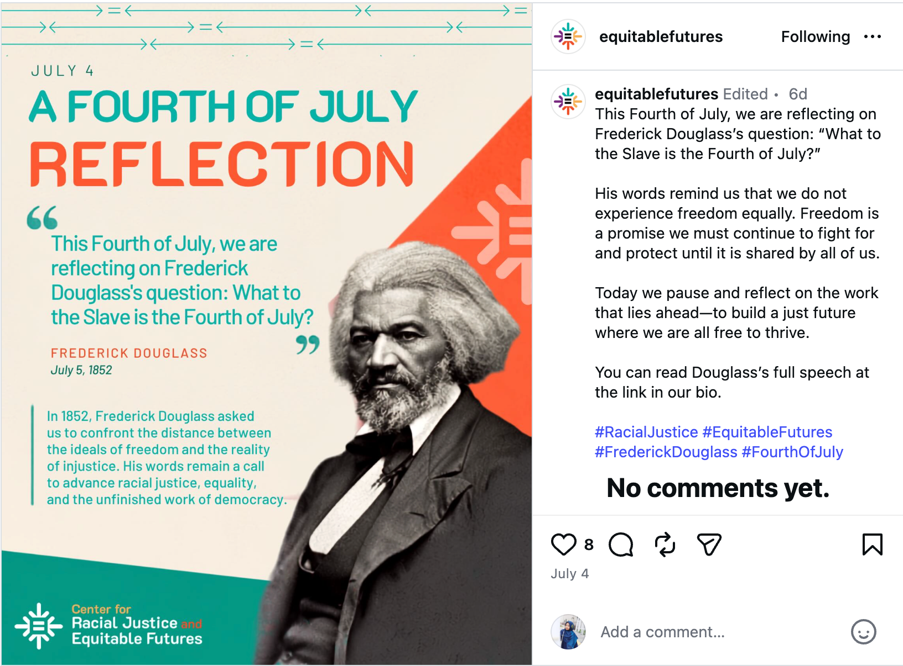
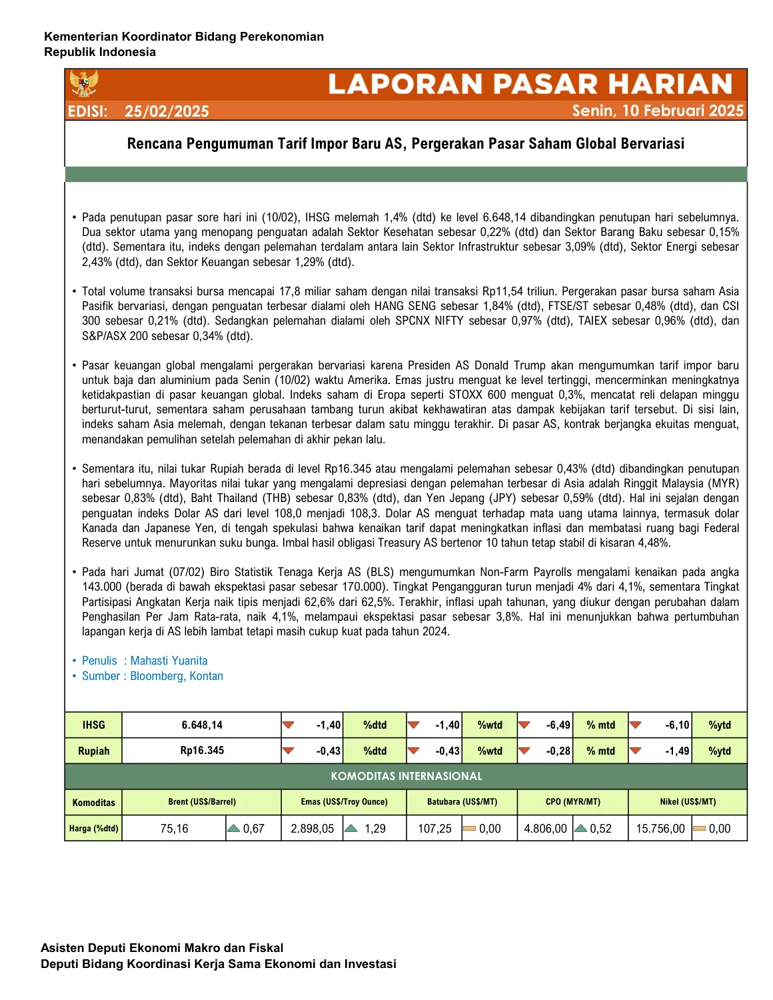

Portfolio · Cornell Global Hubs
Global coordination,
made organized
and actionable.
I bring seven years of international policy and operations experience, current Cornell administrative and communications work, and a detail-oriented approach to supporting partner-centered research, exchange, events, and global collaboration.
01 · Task fit
Skills and interests, in priority order
I am comfortable supporting all seven areas discussed. Based on my experience and the work I most enjoy, I would rank my strongest skills and interests in the following order.
This is a relative preference order—not a limit on what I can support. I am willing to contribute across all seven areas as priorities shift within the Global Hubs team.
All areas supportedUpcoming virtual event
Both dates confirmed
Available October 22 and October 23, 2026
I am available from 8:00–10:00 a.m. on both days, including time before and afterward for setup, technical checks, and debriefing.
Data entry and management
My strongest area: maintaining accurate records, cleaning entries, organizing shared data, and keeping administrative trackers current.
- Excel and Box-based tracking systems
- Validation, standardization, and deduplication
- Responsible data handling and access control
Data analysis
Turning structured data into clear findings, concise summaries, and decision-ready information.
- Excel, Stata, EViews, and MATLAB
- Trend interpretation and quality checks
- Tables, charts, and analytical summaries
Researching and developing briefing
Rapid background research and synthesis for policy, international cooperation, and senior-level meetings.
- Source verification and concise synthesis
- G20, OECD, IMF, and policy contexts
- Executive-ready briefing structure
Virtual meeting design, including developing run-of-shows
Designing focused virtual sessions that make efficient use of limited time and support meaningful participation.
- Goals, agendas, and run-of-shows
- Time-zone and participant planning
- Breakout structure and follow-up
Writing articles in English
Published and reviewed English-language communications, policy writing, and public-facing institutional content.
- Cornell Chronicle press release
- Policy briefs and analytical articles
- Editing for clarity, tone, and audience
Zoom event production, hosting, and breakout-room management
Hands-on support for Zoom Meetings, Zoom Webinars, and Webex events involving international participants.
- Host, co-host, and panelist permissions
- Breakout-room management
- Technical rehearsal and live troubleshooting
In-person events and visitor hosting
Available and willing to support on-campus events, visiting delegations, and practical hospitality needs.
- Arrival and room coordination
- Materials, schedules, and logistics
- Professional cross-cultural hospitality
02 · Experience
International coordination and administrative operations
My strongest contribution is often the work people do not see: making information accurate, meetings usable, and next steps easy to follow.
Cornell University
MPA Candidate and Cornell Student Roles
Building current experience in administrative coordination, communications, student-facing operations, policy research, and data visualization through Cornell coursework and campus employment.
RJEF communicationsHasbrouck operationsPolicy research
Coordinating Ministry for Economic Affairs, Indonesia
Economic Analyst → Policy Analyst
Supported policy coordination connected to the G20, OECD, IMF, and World Bank; gathered inputs across ministries; prepared briefings and presentation decks; and supported international engagements across time zones.
Cross-ministry coordinationSenior briefingsAccurate records and source control
G20 Indonesia Presidency
Treasurer and International Meeting Support
Supported 20 international meetings, managed high-stakes administrative records, coordinated logistics, and helped maintain accurate participant and delegate information.
20 meetingsGlobal delegatesOperations and logistics
12th World Islamic Economic Forum
International Delegate Support Volunteer
Assisted speakers and delegates from more than 100 countries during a large global economic forum with approximately 2,500 participants.
Guest supportSession logisticsCross-cultural service
03 · Capabilities in practice
Thoughtful systems for detailed work
I combine careful execution with practical process improvement—starting with the current workflow, then making it easier to maintain.
Data quality and records management
Reduce errors before they become problems.
I genuinely enjoy structured, repetitive work when accuracy matters. My experience includes data entry, cleaning, standardization, validation, attendance records, contact lists, and thousands of delegate credentials.
Correct source?Consistent format?Duplicates removed?Permissions appropriate?Totals reconcile?Final review complete?
Practical
quality-control routine
Verify source accuracy, formatting consistency, duplicates, permissions, reconciled totals, and final review.
Virtual event design
Design a useful global meeting—not just an open Zoom room.
My direct experience is strongest in Zoom Meetings, Zoom Webinars, and Webex. I would learn Zoom Events through a test environment, documented roles, and a rehearsal before a live program.
- 05 minWelcome, purpose, and participation norms
- 10 minFocused prompt and quick poll
- 20 minBreakouts by theme or shared challenge
- 20 minPattern-based report-out and solutions
- 05 minOwners, next steps, and follow-up
Across
multiple time zones
Map participant locations, poll availability, rotate inconvenient times, and preserve an asynchronous contribution path.
Grant-program efficiency
Make the current process visible before redesigning it.
I would map the grant cycle, identify bottlenecks, standardize repeatable steps, and track whether the changes actually reduce staff time and missed deliverables.
Announce→Apply→Review→Award→Monitor→Close
One
visible source of truth
Track applicants, partner institutions, reviewers, decisions, award amounts, deliverables, reminders, risks, and final reports.
04 · Portfolio evidence
Selected work, with supporting samples
The portfolio combines individual academic work, published professional writing, current Cornell communications, and public collaborative projects. Swipe the document viewers or use the arrow buttons.
Authorship and individual contributions are labeled clearly. Every sample displayed here is public, academic, or specifically approved for sharing.
Swipe enabledIndividual academic work · Cornell University
AI as a Catalyst for Inclusive Economic Transformation
A research-driven presentation developed for AI for Public Policy Class, a course that also felt closely connected to business-management thinking. It examines how AI can address institutional voids in emerging economies while emphasizing trust, transparency, inclusion, platform governance, and local adaptation.
- Translated research and course frameworks into an executive-level narrative.
- Connected AI, financial inclusion, platform ecosystems, and risk-based regulation.
- Designed an 18-slide visual presentation with clear evidence, cases, and policy implications.

Individual policy brief · PUBPOL 5441
Building Fair and Secure Critical Mineral Supply Chains
A 17-page policy brief prepared for the U.S. Senate Committee on Energy and Natural Resources. It frames the supply-chain concentration problem and recommends strategic partnerships, enforceable transparency standards, and investment in midstream processing.
- Structured an executive summary, evidence-based problem definition, and actionable recommendations.
- Integrated international energy, trade, development, and geopolitical considerations.
- Used charts and authoritative sources to make a complex policy issue accessible.
Individual academic writing and quantitative analysis · Independent work
The Transmission of Foreign Direct Investment in International Trade
A 10-page academic research paper examining whether foreign direct investment strengthens Indonesia's exports and whether manufacturing or services generates stronger trade outcomes. The study uses quarterly FDI, export, and output data from Q1 2010 through Q3 2024.
- Developed the research questions, conceptual framework, literature review, and policy recommendations.
- Compiled and analyzed economic data using VECM and ARDL models in EViews.
- Translated quantitative findings into recommendations on manufacturing investment, export orientation, spillovers to domestic firms, and management of services-sector FDI.
Skills demonstrated: data analysis, research and briefing development, econometric interpretation, and English academic writing.
My individual contribution: Independently developed the research design, compiled and processed the data, conducted the econometric analysis, interpreted the results, created the figures and policy framework, and wrote the full paper in English.
Swipe through all 10 pages

Editorial and communications support · Cornell RJEF
RJEF Communications Portfolio
Current work for the Center for Racial Justice and Equitable Futures combines institutional writing, visual adaptation, content scheduling, and channel-specific social media management.
- Wrote the 2026 Graduate Student Research Grantees press release, which was refined through review by my supervisor and Center directors and published by the Cornell Chronicle on July 13, 2026.
- Developed and managed LinkedIn and Instagram content aligned with the Center's mission, including Juneteenth-related content and a Fourth of July reflection on Frederick Douglass.
- Adapted visual assets to RJEF branding and revised captions for the conventions of each platform.
Published writing sample · Cornell ChronicleCenter for Racial Justice and Equitable Futures funds 2026 graduate student research projects
By Mahasti Yuanita · July 13, 2026 · Finalized through supervisory and director review
Read the published article ↗
Recent Instagram work: a Fourth of July reflection on Frederick Douglass, designed and written for RJEF's racial justice focus.
International virtual-event operations · Workflow summary
Virtual International Event Operations
Based on my experience supporting large international virtual meetings through Zoom and Webex, this sample summarizes the end-to-end workflow I use to prepare, produce, and close an event.
- Coordinated host and co-host responsibilities, panelist access, participant permissions, and breakout rooms.
- Prepared run-of-show documents, holding slides, pre-event music, speaker transitions, and break visuals.
- Monitored the live room, managed technical issues, and coordinated follow-up after the meeting.
End-to-end event flow
1
Scope and agendaConfirm goals, audience, time zones, format, and decision points.
2
Technical setupCreate roles, permissions, registration, visual assets, and backup plans.
3
RehearsalTest speakers, timing, screen sharing, breakouts, audio, and handoffs.
4
Live moderationAdmit participants, support speakers, monitor chat, and resolve issues.
5
Close and follow-upCapture decisions, distribute approved materials, and document lessons.
Published data-analysis work · Individual byline
Data Cleaning and Administrative Tracking
These published market reports demonstrate how I collected, standardized, checked, analyzed, and translated daily financial-market data into accurate, readable, and publication-ready briefs.
- Collected, standardized, checked, and summarized market indicators across equities, currencies, commodities, and global developments.
- Validated dates, units, percentage changes, source attribution, narrative consistency, and chart presentation.
- Produced concise daily briefs under time-sensitive publication deadlines; the attached examples carry my individual byline.

Collaborative government publication · Public sample
Investor Relations Unit Economic and Policy Update
Selected slides from the May 2025 public presentation book communicating global economic conditions, Indonesia's macroeconomic performance, fiscal and structural policies, investment climate, and priority reforms.
- Supported economic analysis, compilation, narrative development, data verification, editing, and quality review.
- Translated technical economic material into structured visual briefings for external stakeholders.
- Worked within an institutional publication process requiring accuracy, source control, and supervisor approval.
Clear contribution labels
Independent work first, collaborative work clearly explained.
The portfolio identifies which samples were completed independently and which were produced through supervisory or institutional review. Only public, academic, or approved materials are included.
05 · Readiness
Tools, availability, and working style
Ready to support a small team with consistent, flexible assistance across changing weekly priorities.
Core officeWord · Excel · PowerPoint · Outlook
CollaborationBox · Teams · Trello · Monday.com
Virtual eventsZoom Meetings/Webinars · Webex · Breakouts
CommunicationsMailchimp · Editorial calendars · Editing
AnalyticsStata · EViews · MATLAB · Excel cleaning
Clarify
Confirm the goal, audience, owner, deadline, and required level of access.
Organize
Create a simple work plan, naming structure, and visible status tracker.
Deliver
Complete the task accurately, communicate progress, and meet the agreed deadline.
Improve
Capture lessons so the next version is faster, clearer, and easier to maintain.
Let's connect
Careful administration.
Thoughtful coordination.
Reliable execution.
I would be glad to support Cornell Global Hubs with accurate data work, concise research, virtual-event coordination, communications, and flexible program operations.
Available to begin soon
Available October 22 & 23, 2026, 8:00–10:00 a.m., plus setup and debrief
Flexible evenings and weekends
Available through May 2027; open to discussing opportunities beyond graduation